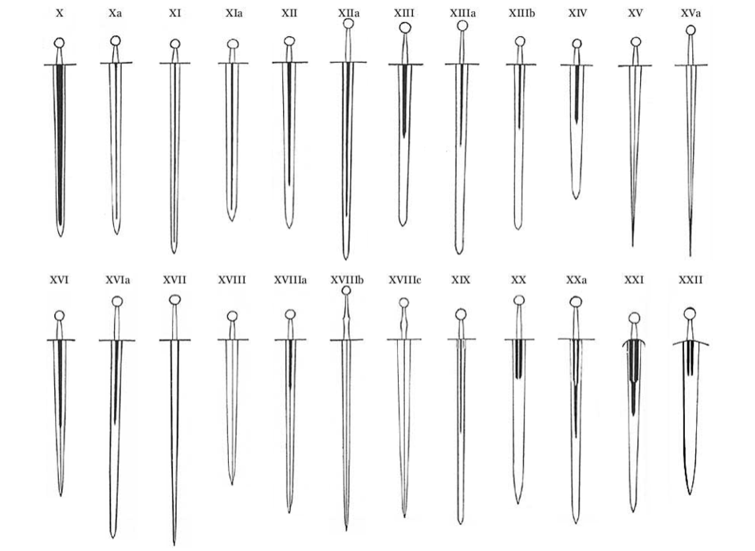

Una longsword ("Espada larga" en esapañol, también escrita long sword o long-sword) es un tipo de espada europea caracterizada por tener una empuñadura cruciforme con un agarre diseñado principalmente para usarse con dos manos (de aproximadamente 15 a 30 cm o 6 a 12 pulgadas), una hoja recta de doble filo de alrededor de 80 a 110 cm (31 a 43 pulgadas), y un peso aproximado de 2 a 3 kg (4 lb 7 oz a 6 lb 10 oz).
El tipo de longsword existe dentro de un continuo morfológico junto con la espada caballeresca medieval y el Zweihänder del Renacimiento. Fue común durante los periodos finales de la Edad Media y el Renacimiento (aproximadamente entre 1350 y 1550).
La longsword tiene muchos nombres en el idioma inglés que, además de diferentes variantes de escritura, incluyen términos como “bastard sword” (espada bastarda) y “hand-and-a-half sword” (espada de mano y media). De estos, “bastard sword” es el más antiguo, ya que su uso coincide con la época de mayor popularidad de esta arma.
El término francés épée bâtarde y el inglés “bastard sword” se originan en los siglos XV o XVI. Originalmente se usaban en el sentido general de “espada irregular” o “espada de origen incierto”, pero a mediados del siglo XVI podían referirse a espadas excepcionalmente grandes. En la competencia de los “Masters of Defence” organizada por Enrique VIII en julio de 1540, se listaban la espada a dos manos y la espada bastarda como dos categorías separadas. No está claro si el mismo término también podía usarse para otros tipos de espadas más pequeñas, pero el uso antiquario del siglo XIX estableció que “bastard sword” se refiriera de manera inequívoca a estas espadas grandes.
El término “hand-and-a-half sword” (espada de mano y media) es relativamente moderno (de finales del siglo XIX). Este nombre se le dio porque el equilibrio de la espada permitía usarla tanto con una mano como con dos. Durante la primera mitad del siglo XX, el término “bastard sword” también se utilizaba con frecuencia para referirse a este tipo de espada, mientras que “long sword”, si se utilizaba, solía referirse al estoque (rapier) en el contexto de la esgrima del Renacimiento o de la Edad Moderna temprana.
Otro nombre surgido en el siglo XIX es “broadsword” (espada ancha), que nació de comparaciones entre su hoja y la de espadas más delgadas. Este nombre es común en la literatura no especializada, donde a menudo se usa de forma genérica para referirse a cualquier espada medieval. Sin embargo, de manera más correcta —y también histórica— se refiere a las espadas con empuñadura de cesta del siglo XVIII.
El uso contemporáneo de “long-sword” o “longsword” reapareció recién en los años 2000 en el contexto de la reconstrucción de la escuela alemana de esgrima, como traducción del término alemán langes schwert. Antes de esto, el término “long sword” simplemente se refería a cualquier espada con una hoja larga, donde “long” (larga) era solo un adjetivo y no una clasificación específica.
Los términos históricos (siglos XV al XVI) para este tipo de espada incluían el portugués espada-de-armas, estoque o espada de duas mãos para la versión con una empuñadura más larga usada exclusivamente con ambas manos; el español espadón, montante o mandoble; el italiano spada longa (lunga) o spada due mani (boloñesa), y el francés medio passot. El gaélico escocés claidheamh mòr significa “gran espada”; anglicanizado como claymore, llegó a referirse a un gran tipo escocés de longsword con una guarda en cruz en forma de V.
La terminología histórica se superpone con la aplicada a la espada Zweihänder en el siglo XVI: el francés espadon, el español espadón o el portugués montante también pueden usarse de forma más específica para referirse a estas grandes espadas. El francés épée de passot también puede referirse a una espada medieval de una mano optimizada para estocar.
El término alemán langes schwert (“espada larga”) en los manuales de los siglos XV y XVI no designa un tipo de arma, sino la técnica de esgrima que utiliza ambas manos en la empuñadura, en contraste con kurzes schwert (“espada corta”), que se usa para referirse a la esgrima con la misma arma pero con una mano sujetando la hoja (también conocido como media espada).
La longsword se caracteriza no tanto por tener una hoja más larga, sino por poseer una empuñadura más larga, lo que indica que es un arma diseñada para usarse con ambas manos. Espadas con empuñaduras excepcionalmente largas se encuentran a lo largo de la Alta Edad Media. Por ejemplo, existe una longsword en el Museo de Arte e Historia de Glasgow, etiquetada como XIIIa.5, que los estudiosos han fechado entre 1100 y 1200 debido al estilo de la empuñadura y a su forma de estrechamiento característica. Sin embargo, espadas como esta siguen siendo extremadamente raras y no representan una tendencia identificable antes de finales del siglo XIII o principios del XIV.
La longsword como tipo propio del final de la Edad Media surge en el siglo XIV, como un arma militar de acero durante la fase inicial de la Guerra de los Cien Años. Se mantiene identificable como tipo aproximadamente entre 1350 y 1550. Durante todo el período medieval tardío continuó utilizándose como arma de guerra, destinada a combatientes que llevaban armadura completa de placas, tanto a pie como a caballo. No obstante, desde finales del siglo XV también se documenta su uso por soldados o mercenarios sin armadura.
El uso de la gran espada de dos manos o Schlachtschwert por parte de la infantería (a diferencia de su empleo por caballeros montados y completamente acorazados) parece haberse originado entre los suizos en el siglo XIV. Para el siglo XVI, su uso militar estaba en gran medida obsoleto, culminando en el breve período en que los enormes Zweihänder fueron utilizados por los Landsknechte alemanes a principios y mediados del siglo XVI. En la segunda mitad del siglo XVI, esta arma persistió principalmente como arma para competencias deportivas de esgrima (Schulfechten) y posiblemente en duelos caballerescos.
Durante la primera mitad del siglo XVI se desarrollaron tipos distintivos de empuñadura para la llamada “espada bastarda”. El historiador Ewart Oakeshott distingue doce tipos diferentes. Todos parecen haberse originado en Baviera y Suiza. Hacia finales del siglo XVI comenzaron a aparecer en este tipo de espada las primeras formas de empuñaduras desarrolladas (más complejas y protectoras). Aproximadamente desde 1520, el sable suizo (schnepf) empezó a reemplazar a la longsword recta en Suiza, heredando muchos de sus tipos de empuñadura, y hacia 1550 la longsword prácticamente había dejado de usarse allí. En el sur de Alemania continuó utilizándose hasta la década de 1560, aunque su uso también disminuyó durante la segunda mitad del siglo XVI.
Existen dos ejemplos tardíos de espadas largas conservados en el Museo Nacional Suizo, ambos con pomos acanalados verticalmente y decorados elaboradamente con incrustaciones de plata. Ambos pertenecieron a nobles suizos al servicio de Francia a finales del siglo XVI y comienzos del XVII: Gugelberg von Moos y Rudolf von Schauenstein.
La longsword, la gran espada y la espada bastarda también se fabricaron en España, donde aparecieron relativamente tarde y fueron conocidas respectivamente como espadón, montante y bastarda o espada de mano y media.
Las espadas agrupadas como “espadas largas” para los propósitos de este artículo se caracterizan por estar diseñadas para usarse con ambas manos. En términos de tipología de la hoja, no forman una sola categoría. En la tipología de morfología de hojas de Ewart Oakeshott, las “espadas largas” aparecen como una serie de subtipos derivados de los tipos correspondientes de espadas de una sola mano.

La expresión alemana “fechten mit dem langen schwert” (“esgrima con la espada larga”) en la escuela alemana de esgrima se refiere al estilo de combate que utiliza ambas manos en la empuñadura. En cambio, “fechten mit dem kurzen schwert” (“esgrima con la espada corta”) se usa para describir el combate en media espada, en el que una mano sujeta la hoja. Estos dos términos son en gran medida equivalentes a “combate sin armadura” (*blossfechten*) y “esgrima con armadura” (*fechten im harnisch*).
Existían sistemas codificados de combate con la espada larga desde finales del siglo XIV, con una variedad de estilos y maestros, cada uno aportando una interpretación ligeramente distinta del arte. Hans Talhoffer, un maestro de combate alemán de mediados del siglo XV, es probablemente el más destacado; utilizaba una gran variedad de movimientos, muchos de los cuales terminaban en técnicas de lucha cuerpo a cuerpo. La espada larga era un arma rápida, efectiva y versátil, capaz de realizar estocadas, tajos y cortes mortales. La hoja generalmente se utilizaba con ambas manos en la empuñadura, con una de ellas descansando cerca del pomo o directamente sobre él. El arma también podía sostenerse con una sola mano durante técnicas de desarme o agarre. En algunas representaciones de duelos, se puede ver a los combatientes empuñando espadas largas de punta muy aguda con una sola mano, dejando la otra mano libre para manipular un gran escudo de duelo.
Otra variación en el uso de la espada larga surge a partir del uso de armadura. La técnica llamada media espada (half-swording) consistía en utilizar ambas manos, una en la empuñadura y otra en la hoja, para controlar mejor el arma al realizar estocadas y golpes punzantes. Esta versatilidad era notable, ya que varias obras sostienen que el manejo de la espada larga proporcionaba las bases para aprender a usar otras armas, como lanzas, bastones y armas de asta.
El uso ofensivo de la espada larga no se limitaba solo a la hoja. Varios Fechtbücher (manuales de esgrima) explican y muestran el uso del pomo y de la cruz de la guarda como armas ofensivas. La cruz podía utilizarse como gancho para hacer tropezar al oponente o desequilibrarlo, y algunos manuales incluso la muestran utilizada como si fuera un martillo.
Gran parte de lo que se sabe sobre el combate con espada larga proviene de representaciones artísticas de batallas en manuscritos y de los Fechtbücher de maestros medievales y renacentistas. En ellos se describían —y en algunos casos se ilustraban— los principios básicos del combate. La escuela alemana de esgrima incluye el manual más antiguo conocido sobre espada larga, aproximadamente del año 1389, conocido como GNM 3227a. Lamentablemente para los estudiosos modernos, este manual fue escrito en verso oscuro y difícil de interpretar. Fue gracias a estudiantes de Johannes Liechtenauer, como Sigmund Ringeck, que transcribieron el trabajo en prosa más comprensible, que el sistema se volvió más codificado y entendible. Otros autores realizaron trabajos similares, algunos acompañando el texto con numerosas ilustraciones.
La escuela italiana de esgrima fue la otra gran tradición en el uso de la espada larga. El manuscrito de 1410 de Fiore dei Liberi presenta diversas formas de utilizar esta arma. Al igual que en los manuales alemanes, el arma se muestra y se enseña normalmente con ambas manos en la empuñadura. Sin embargo, el libro incluye también una sección sobre el uso con una sola mano, donde se muestran las técnicas y ventajas, como el alcance adicional repentino que puede ofrecer este estilo. El manual también presenta las técnicas de media espada como una parte esencial del combate con armadura.
Ambas escuelas comenzaron a declinar a finales del siglo XVI. Los maestros italianos posteriores abandonaron en gran medida la espada larga para concentrarse principalmente en la esgrima con estoque (rapier). El último manual alemán conocido que incluye enseñanza de espada larga fue el de Jakob Sutor, publicado en 1612. En Italia, sin embargo, la enseñanza del spadone (espada larga) continuó a pesar de la popularidad del estoque, al menos hasta mediados del siglo XVII, como muestra Lo Spadone de Francesco Alfieri (1653). Incluso existe un tratado tardío sobre la “espada de dos manos” escrito por Giuseppe Colombani, un dentista de Venecia, fechado en 1711.
Una tradición de enseñanza basada en estas prácticas ha sobrevivido hasta la actualidad en ciertas formas de combate con bastón en Francia e Italia.
Las espadas largas han aparecido de forma destacada en la cultura popular, especialmente dentro del género de fantasía, donde suelen simbolizar honor, nobleza y habilidad en combate.
Algunos ejemplos notables incluyen: